Everything you need to get set up and your picks locked in for the season.
Head to pickfivepool.com.
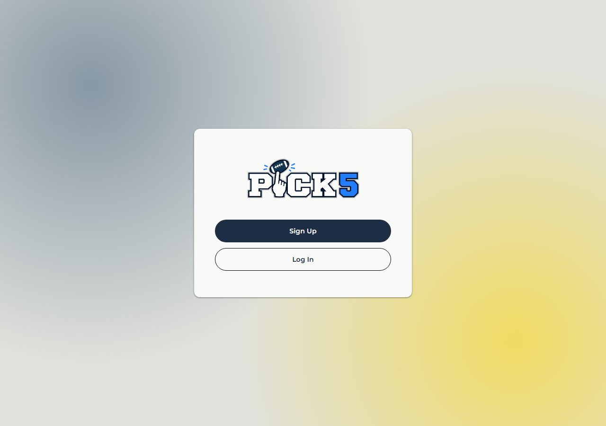
If you are a new player, click Sign Up and enter your information on the sign up page. For your name, put whatever you want your leaguemates to see. You can change how you appear in a specific league later on from the menu once you're set up.
If you're a returning player, click Log In and enter your credentials from last year.
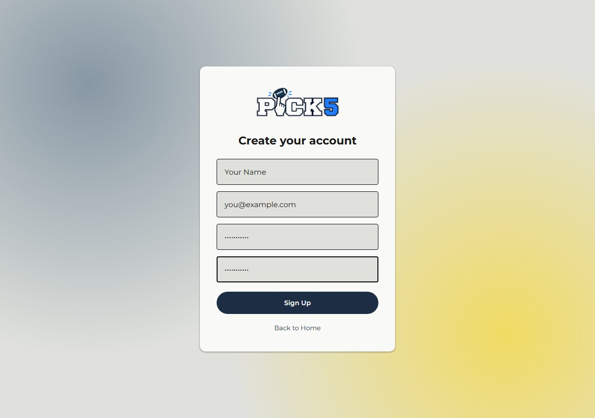
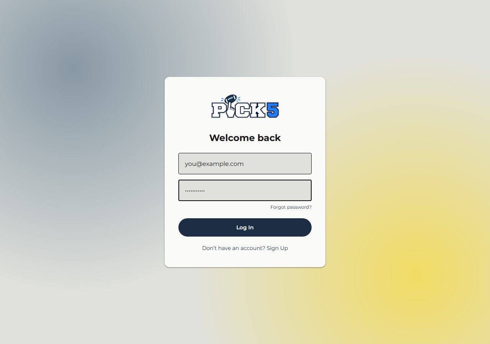
Signing up / logging in takes you to Your Leagues. To join a league, click New League in the bottom right, then click Join, and enter the 6-digit invite code your league organizer gave you.
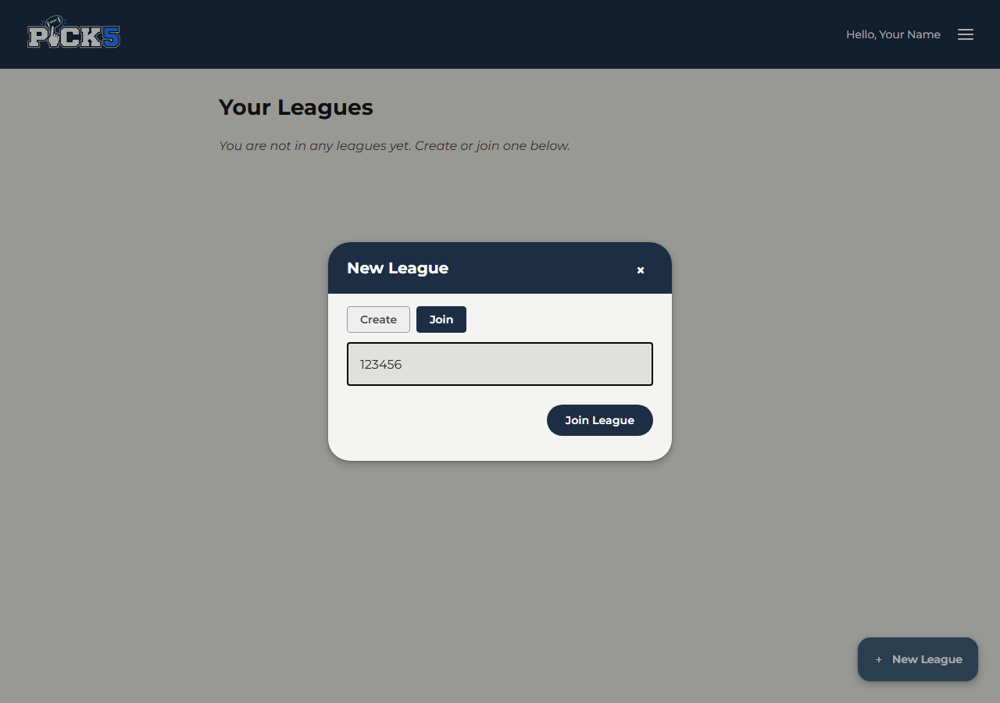
If you'd like to start your own league instead, click New League, then click Create, and enter your desired league name. Once it's created, you'll get a 6-digit invite code to share with the players you want to join your league.
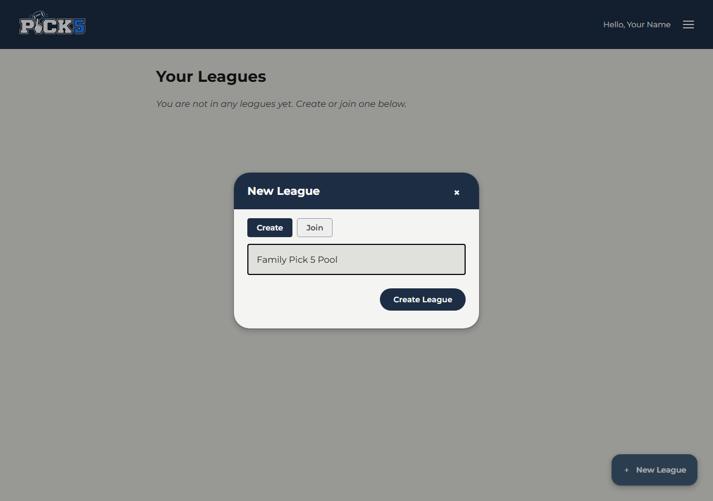
Select your league and you'll land on the Picks page. Select the week you want to make picks for from the navigation bar at the top of the page. After selecting a week, scroll through the matchups list and select 5 teams to make your picks for that week. These teams will pop up in the Your Picks section of the screen.
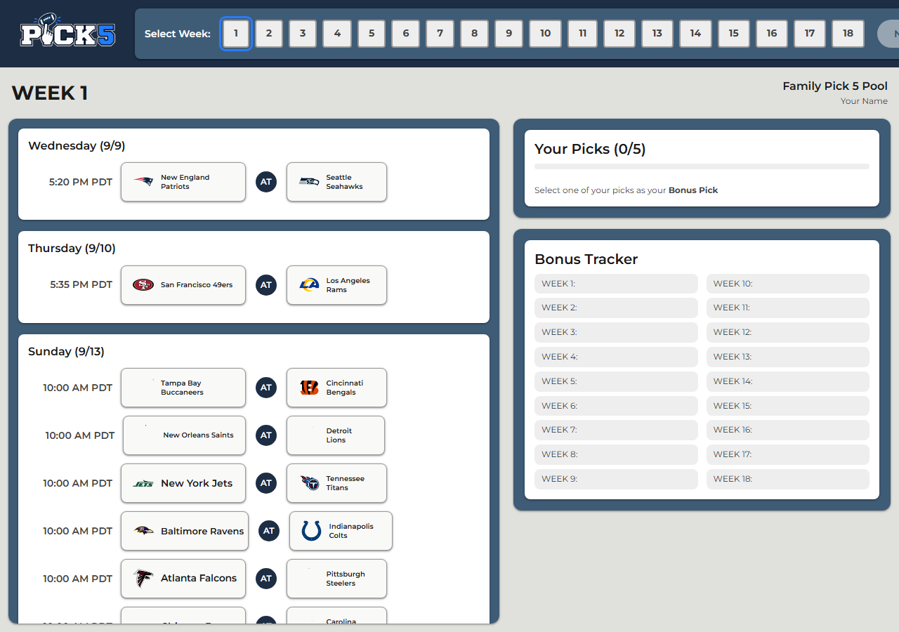
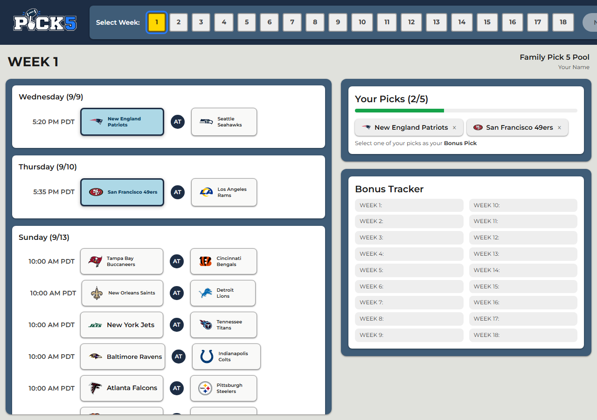
Select one of the teams in the Your Picks section to make it your bonus team. It will become highlighted and show up in the Bonus Tracker section of the screen. Do this for each of the 18 weeks of the season.
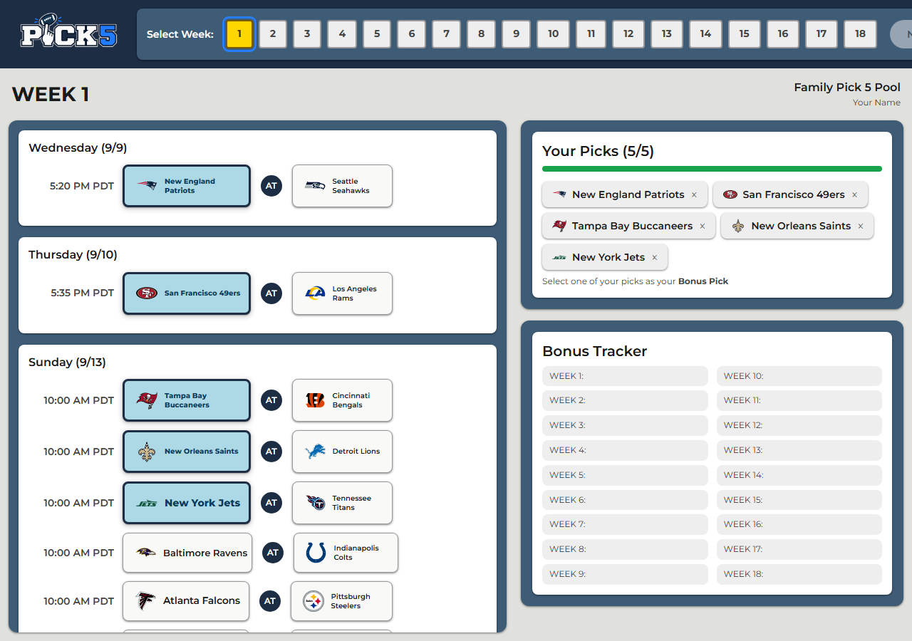
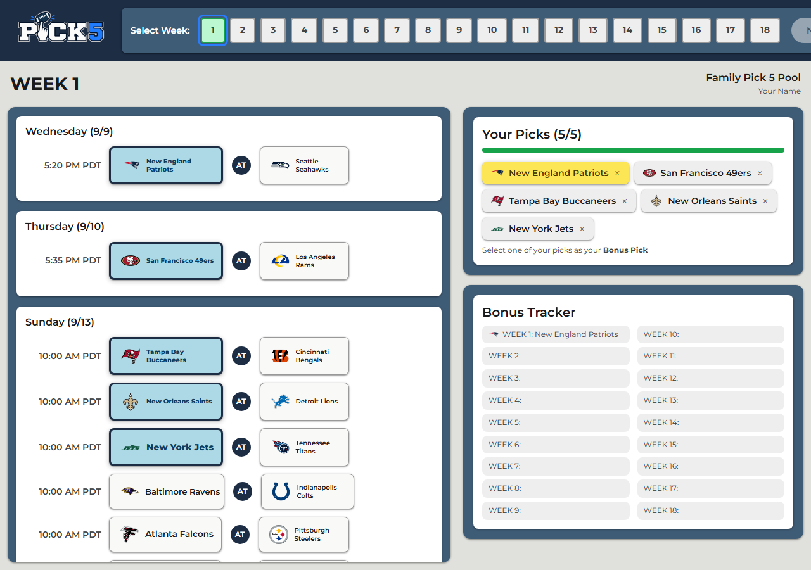
The week navigation bar on the Picks page is color coded:
See a red week? Check the Bonus Tracker to see which weeks are conflicting, and go fix them.
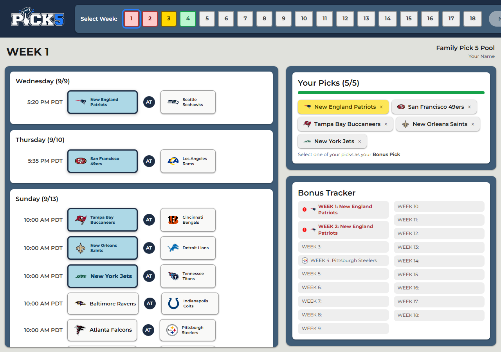
Once every week is green, click the Next button to go to the Summary page, showing every pick you made, week by week. Scroll through and confirm everything looks correct. Once you're happy, click Submit, and you'll get a confirmation popup asking if you're sure.
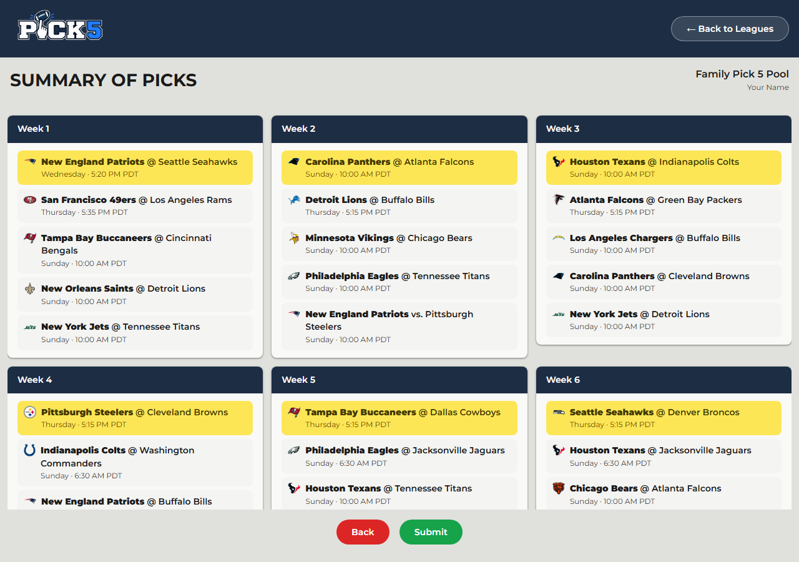
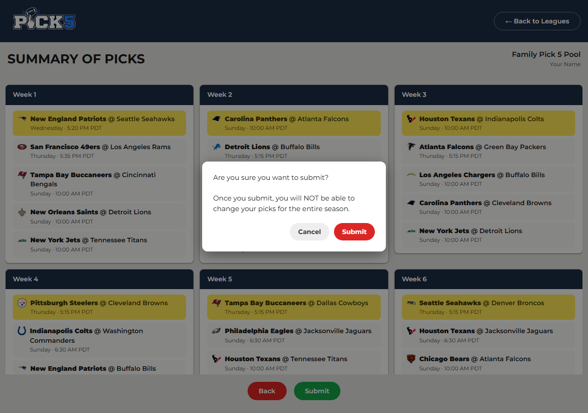
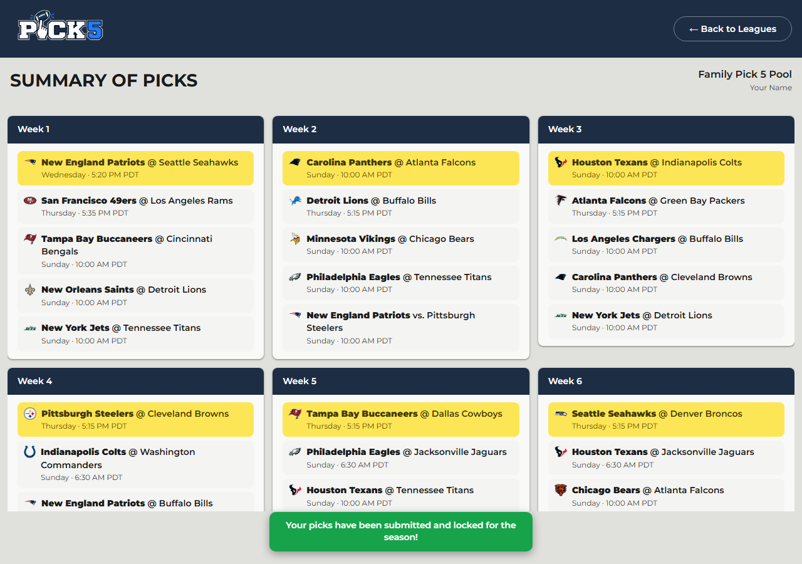
If you have any issues or questions with the app, reach out to Ryan.
Remember: leagues automatically lock and you're no longer allowed to make picks once the NFL season kicks off.